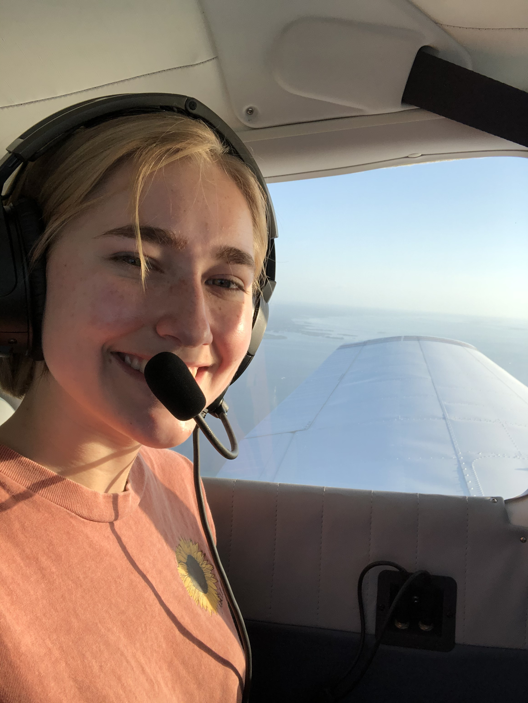
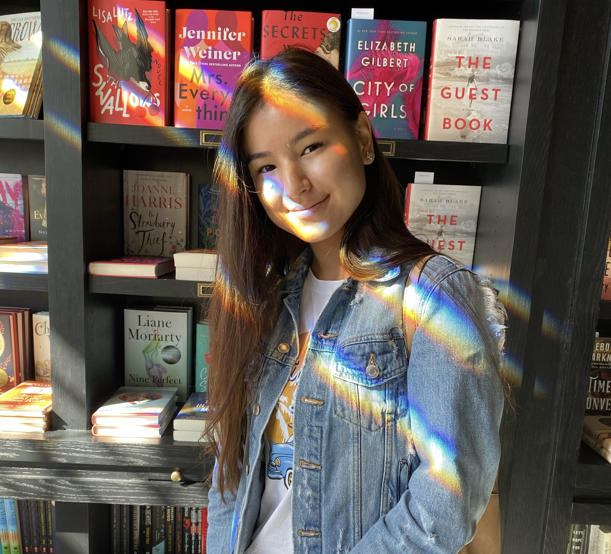

CSE AMBASSADORS
The Computer Science and Engineering ambassadors are a group of current USF students that are involved in expanding outreach, improving engagement, and organizing CSE centered events.
The ambassadors are CSE majors, and they come from broadly diverse backgrounds. We want to foster a diverse, open, and inclusive CSE community at USF. Our mission as the CSE Ambassadors is to help our fellow bulls navigate the world of Computer Science and Engineering at USF better. We plan to do so by hosting exciting events and workshops, providing support for various CSE clubs and organizations, introducing mentor-mentee programs and community building events, and acting as a one stop hub for the entire USF CSE Community.
Click here to chat with an Ambassador!
Chloe Berry

Hi there! I am a sophomore in Computer Science and I attended Palm Harbor University High School. Computer science has always been a passion of mine, it is a super fun hobby and career where I feel like there are so many opportunities to learn and create.
I decided to go to USF to pursue my career because I loved the diversity, level of opportunities, and open-mindedness of the school. I wanted to become an ambassador because too many people get scared away from the CS field. I wanted to help people understand that it is a career that is achievable and fulfilling. I wanted to be someone who could provide information and advice on how to get the most out of USF. I am also a pilot! Aviation is a big part of my life and is something I am extremely passionate about. I was super involved with Civil Air Patrol and nearly went into the Air Force. Aside from flying and software, I love drawing, indoor gardening (I might have too many plants), and watching anime with my sister. If you have any questions, feel free to reach out, I’d love to chat!
Dariya Alibi

Hi everyone! My name is Dariya Alibi, and I am an international student from Kazakhstan. I am a junior majoring in Computer Science. The reason why I decided to pursue this major is that I want to show that being an engineer, especially a computer science one is encouraging and exciting. I believe we – engineers - can change the world for the better and USF provides all these opportunities!
I decided to become a CSE Ambassador because I possess knowledge about this major and I know what it is like to be a new student, so by sharing my experience with you I will guide you through the process and help you thrive! By creating a safe environment for current engineers, we – ambassadors – can support you to flourish in your fields of studies as well as motivate you to continue your compelling engineering journey.
I am a member of several organizations such as the Society of Hispanic Professional Engineers, Society of Women Engineers, and Women in Computer Science & Engineering.
Fun fact about me - I love filming and I have a YouTube channel (DaraDark)!
Feel free to reach out if you have any questions! I would love to become your friend! Go Bulls!